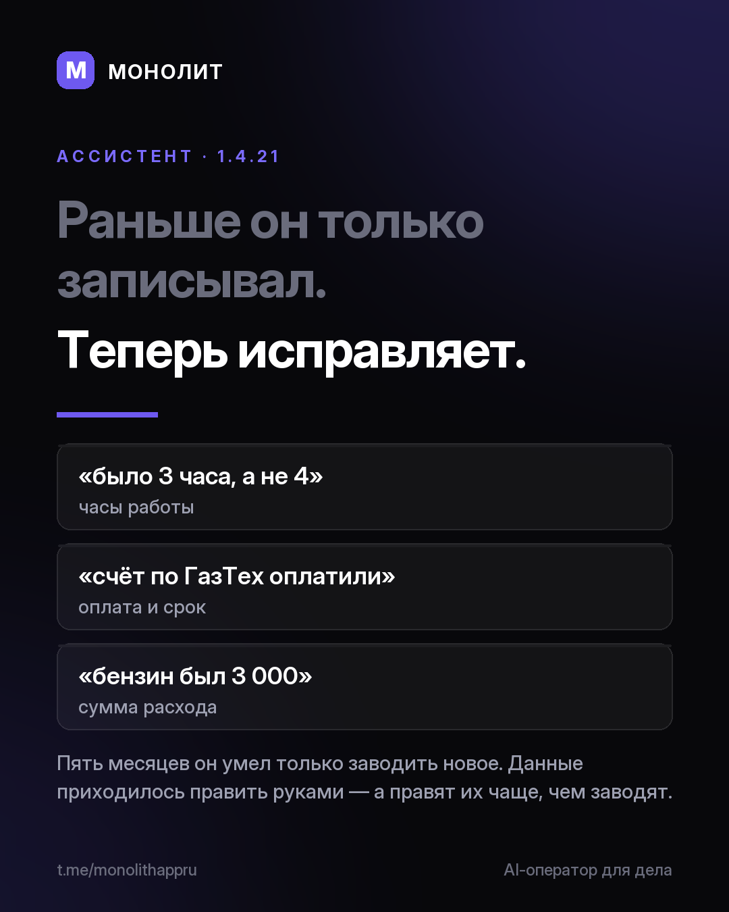

Дневник разработки · 01.08.2026
Ассистент научился исправлять, а не только записывать

Раньше ассистент только записывал. Теперь исправляет.
Пять месяцев он умел только заводить новое. А правят данные чаще, чем заводят.
Теперь ему говорят как человеку: «бензин был 3 000, а не 2», «счёт по ГазТех оплатили», «было 3 часа, а не 4», «перенеси срок на 15 августа», «верни заказ из корзины».
Перед каждым действием приходит карточка и называет его словами: «Записать расход 2 000 ₽ · бензин · заказ ГазТех». Пока не нажал, в базе ничего не менялось.
Заодно нашёл, почему он думал долго. Сервер запоминает начало запроса и не считает его заново, а у меня третьей строкой стояла текущая дата с микросекундами: начало было новым в каждом сообщении, и десять тысяч токенов правил пересчитывались с нуля. Дата уехала в конец, из кэша теперь берётся 9 728 токенов из 9 850.
Голос на телефоне тоже переехал на свой движок: речь считает сам телефон и не обрывается на паузах.
1.4.21 уже в проде, Windows и Android. Установленное обновится само.
МОНОЛИТ — учёт заказов, клиентов и денег одной фразой. Windows и Android, бесплатная бета.
Скачать Читать канал